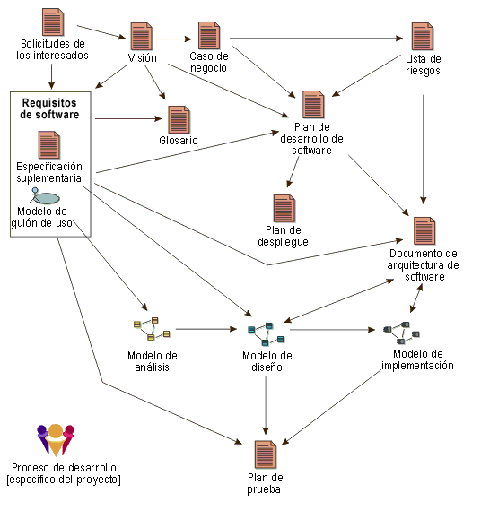

Producto de trabajo
Un producto de trabajo es una abstracción general que representa un resultado del proceso. Entre los productos de
trabajo encontramos:
Las tareas tienen productos de trabajo de entrada y de salida. Los roles utilizan productos de trabajo para realizar
tareas y producir otros productos de trabajo mientras realizan las tareas. Los productos de trabajo son responsabilidad
de un único rol, de forma que la responsabilidad es fácil de identificar y de comprender, y promueven la idea de que
toda la información producida en el proceso precisa el conjunto de habilidades adecuado. Incluso si un rol pudiera ser
el "propietario" del producto de trabajo, otros roles pueden utilizar el producto de trabajo, incluso actualizarlo si
el rol ha recibido permiso para hacerlo.

Productos de trabajo populares en el desarrollo de software y las relaciones de dependencia aproximada entre ellos.
Tenga en cuenta que "Producto de trabajo" es el término utilizado para describir lo que otros proceso denotan
mediante términos como artefacto, unidad de trabajo y otros. En UMA, los entregables son sólo el
subconjunto de todos los productos de trabajo que terminarán por entregarse a los clientes y usuarios, generalmente
como parte de una entrega acordada de formal o contractualmente.
|